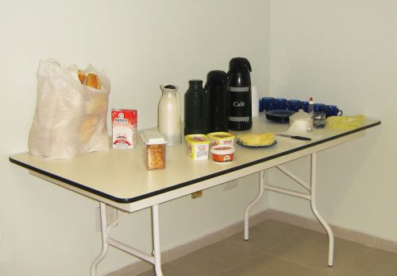

Café da Manhã
Os funcionários dispõem, diariamente, de um café da manhã.
Regras:
- 1. O horário é das 07:30 ás 08:00, em seguida será retirado e não é permitido tomar café na cozinha, após este horário.
- 2. O Ponto só pode ser registrado após ter tomado café, no inicio da suas atividades.

Voltar